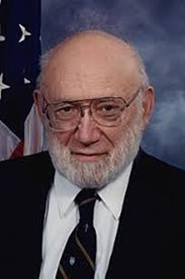
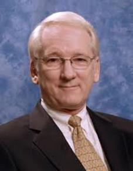

Министерство науки и высшего образования Российской Федерации
ФЕДЕРАЛЬНОЕ ГОСУДАРСТВЕННОЕ БЮДЖЕТНОЕ ОБРАЗОВАТЕЛЬНОЕ УЧРЕЖДЕНИЕ ВЫСШЕГО ОБРАЗОВАНИЯ «САНКТ-ПЕТЕРБУРГСКИЙ ГОСУДАРСТВЕННЫЙ УНИВЕРСИТЕТ ТЕЛЕКОММУНИКАЦИЙ ИМ. ПРОФ. М.А. БОНЧ-БРУЕВИЧА» (СПБГУТ)
Дисциплина: Введение в профессию
Тема работы: История развития экспертных систем
Задачи и цель работы
Цель работы:
Провести исследование эволюции экспертных систем с момента их появления до нашего времени.
Задачи работы:
- Дать определение экспертных систем
- Дать основные понятия и рассказать о принципе работы экспертных систем
- Перечислить области применения экспертных систем
- Рассказать историю появления первых экспертных систем, и их эволюцию до нашего времени
Что такое экспертная система?
Экспертные системы (далее по тексту — ЭС) - это направление исследований в области искусственного интеллекта по созданию вычислительных систем, умеющих принимать решения, схожие с решениями экспертов в заданной предметной области. [6]
Что она собой представляет? Это информационная система, назначение которой частично или полностью заменить эксперта в той или иной предметной области. Экспертные системы имеют одно большое отличие от других систем искусственного интеллекта: они не предназначены для решения каких-то универсальных задач, как например нейронные сети или генетические алгоритмы. Экспертные системы предназначены для качественного решения задач в определенной разработчиками области, в редких случаях – областях.
Фундаментом экспертной системы любого типа является база знаний, которая составляется на основе экспертных знаний специалистов. Экспертное знание – это сочетание теоретического понимания проблемы и практических навыков ее решения, эффективность которых доказана в результате практической деятельности экспертов в данной области [8]. Правильно выбранный эксперт и удачная формализация его знаний позволяет наделить экспертную систему уникальными и ценными знаниями.
Экспертная система является плодом совместной работы экспертов в данной предметной области, инженеров по знаниям и программистов.
Основные понятия
- База данных (рабочая память) предназначена для хранения исходных и промежуточных данных решаемой в текущий момент задачи. Этот термин совпадает по названию, но не по смыслу с термином, используемым в информационно-поисковых системах и системах управления базами данных для обозначения всех данных (в первую очередь долгосрочных), хранимых в системе.
- База знаний в ЭС предназначена для хранения долгосрочных данных, описывающих рассматриваемую область (а не текущих данных), и правил, описывающих целесообразные преобразования данных этой области.
- Решатель, используя исходные данные из рабочей памяти и знания из БЗ, формирует такую последовательность правил, которые, будучи примененными к исходным данным, приводят к решению задачи.
- Компонент приобретения знаний автоматизирует процесс наполнения ЭС знаниями, осуществляемый пользователем-экспертом.
- Объяснительный компонент объясняет, как система получила решение задачи (или почему она не получила решение) и какие знания она при этом использовала, что облегчает эксперту тестирование системы и повышает доверие пользователя к полученному результату.
- Диалоговый компонент ориентирован на организацию дружественного общения с пользователем как в ходе решения задач, так и в процессе приобретения знаний и объяснения результатов работы [3].
- Рабочая память предназначена для хранения исходных и промежуточных фактов решаемой в текущий момент задачи. Как правило, размещается в оперативной памяти ЭВМ и отражает текущее состояние предметной области в виде фактов с коэффициентами уверенности (КУ) в истинности этих фактов.
- Подсистема приобретения и пополнения знаний автоматизирует процесс наполнения экспертной системы знаниями, осуществляемый пользователем-экспертом, и адаптации базы знаний системы к условиям ее функционирования. Адаптация экспертной системы к изменениям в предметной области реализуется путем замены правил или фактов в базе знаний.
- Подсистема объяснения объясняет, как система получила решение задачи (или почему она не получила решения) и какие знания она при этом использовала, что облегчает эксперту тестирование системы и повышает доверие пользователя к полученному результату.
- Механизм логического вывода (МЛВ) предназначен для получения новых фактов на основе сопоставления исходных данных из рабочей памяти и знаний из базы знаний. Механизм логического вывода во всей структуре экспертной системы занимает наиболее важное место. Он реализует алгоритмы прямого и/или обратного вывода и формально может быть представлен четверкой [4]: V – процедура выбора из базы знаний и рабочей памяти правил и фактов; S – процедура сопоставления правил и фактов, в результате которой определяется множество фактов к которым применимы правила для присвоения значений; K – процедура разрешения конфликтов, определяющая порядок использования правил, если в заключении правила указаны одинаковые имена фактов с разными значениями; W – процедура, осуществляющая выполнение действий, соответствующих полученному значению факта (заключению правила).
Принцип работы
Экспертная система работает в двух режимах: режиме приобретения знаний и в режиме консультаций (называемом также режимом решения или режимом пользования экспертной системой) [5].
В режиме приобретения знаний общение с экспертной системой осуществляет эксперт. В этом режиме эксперт, используя компонент приобретения знаний, наполняет систему знаниями, которые позволяют экспертной системе в режиме консультаций самостоятельно (без эксперта) решать задачи из проблемной области. Эксперт описывает проблемную область в виде совокупности данных и правил. Данные определяют объекты, их характеристики и значения, существующие в области экспертизы. Правила определяют способы манипулирования с данными, характерные для рассматриваемой области.
В режиме консультации общение с экспертной системой осуществляет конечный пользователь, которого интересует результат и (или) способ его получения. Необходимо отметить, что в зависимости от назначения экспертной системы пользователь может не быть специалистом в данной проблемной области (в этом случае он обращается к экспертной системе за результатом, не умея получить его сам), или быть специалистом (в этом случае пользователь может сам получить результат, но он обращается к экспертной системе с целью либо ускорить процесс получения результата, либо возложить на экспертную систему рутинную работу). Следует подчеркнуть, что термин «пользователь» является многозначным, так как использовать экспертную систему кроме конечного пользователя может и эксперт, и инженер по знаниям, и программист.
В режиме консультации данные о задаче пользователя после обработки их диалоговым компонентом поступают в рабочую память. Решатель на основе входных данных из рабочей памяти, общих данных о проблемной области и правил из базы знаний формирует решение задачи.
Хорошо построенная экспертная система должна иметь возможность самообучаться на решаемых задачах, пополняя автоматически свою базу знаний результатами полученных выводов и решений.
Области примения экспертных систем
- Медицинская диагностика - диагностические системы используются для установления связи между нарушениями деятельности организма и их возможными причинами. Наиболее известна диагностическая система MYCIN, которая предназначена для диагностики и наблюдения за состоянием больного при менингите и бактериальных инфекциях.
- Прогнозирование - прогнозирующие системы предсказывают возможные результаты или события на основе данных о текущем состоянии объекта. Прогнозирующие системы уже сегодня могут предсказывать погоду, урожайность и поток пассажиров.
- Планирование - планирующие системы предназначены для достижения конкретных целей при решении задач с большим числом переменных.
- Интерпретация - интерпретирующие системы обладают способностью получать определенные заключения на основе результатов наблюдения. Например, ИС HASP/SIAP определяет местоположение и типы судов в тихом океане по данным акустических систем слежения.
- Контроль и управление - системы, основанные на знаниях, могут применятся в качестве интеллектуальных систем контроля и принимать решения, анализируя данные, поступающие от нескольких источников. Такие системы уже работают на атомных электростанциях, управляют воздушным движением и осуществляют медицинский контроль.
- Диагностика неисправностей в механических и электрических устройствах - В этой сфере системы, основанные на знаниях, незаменимы как при ремонте механических и электрических машин (автомобилей, дизельных локомотивов и т.д.), так и при устранении неисправностей и ошибок в аппаратном и программном обеспечении компьютеров.
- Обучение - Системы, основанные на знаниях, могут входить составной частью в компьютерные системы обучения. Система получает информацию о деятельности некоторого объекта (например, студента) и анализирует его поведение. База знаний изменяется в соответствии с поведением объекта.
История появления первой ЭС
История экспертных систем берет свое начало в 1965 году, когда Эдвард Фейгенбаум, исследователь в области искусственного интеллекта, как и многие ученые его времени, задумывался над тем, может ли машина думать и рассуждать подобно человеку и как много знаний в нее возможно вложить. Он считал, что ответ удастся получить, только сконструировав такую "мыслящую" систему. Но какое же научное направление выбрать для экспериментов? В какой предметной области разработки Фейгенбаума принесли бы большую пользу?
Разрешить эти вопросы помог лауреат нобелевской премии, биохимик Джошуа Ледерберг. Он предложил создать компьютерного помощника, который мог бы определять путем расчета молекулярную структуру химических соединений и который, по словам Ледерберга, был просто необходим в органической химии. Так появилась идея о построении экспертной системы DENDRAL.
В 1965 году в Стэндфордском университете Эдвард Фейгенбаум, Джошуа Ледерберг и примкнувший к ним Брюс Бученен начали работы по созданию первой экспертной системы. Одной из главных проблем, которую ученым надлежало решить, было построение гибкой программы, оперирующей с многочисленными знаниями и работающей по правилам логики ("если - то").
Однако, как оказалось, сложнее всего было создать базу данных, включающую знания многих специалистов в органической химии. Для этого разработчикам DENDRAL пришлось опросить как можно больше экспертов. Приобретение знаний - не такой легкий процесс, как это может показаться на первый взгляд. Одно дело собрать факты, другое - познания конкретного человека. Поэтому опрашиваемым специалистам была предоставлена специальная программа, которая производила некоторые "умозаключения", правдивость или ложность которых им нужно было установить и объяснить. Таким образом, отделив механизм логического вывода от базы знаний, Бученен предложил хороший инструмент для создания экспертных систем. Одной из самых первых подобных программ была META-DENDRAL. С ее помощью и с помощью аналогичных разработок были построены такие ЭС, как PROSPECTOR, MYCIN и CYRUS.
С 70-х годов ЭС стали ведущим направлением в области искусственного интеллекта. В этот период было создано множество разнообразных экспертных и диагностических систем, большая часть которых действует и сегодня. Самыми известными из них являются MYCIN, служащая для диагностики и лечения инфекционных заболеваний, и PROSPECTOR, предназначенная для геологической разведки месторождений полезных ископаемых.
Первая версия ЭС MYCIN была построена в уже знакомом нам Стэндфордском университете в середине 70-х годов. Ее создатель - врач и специалист в области вычислительной техники Эдвард Шортлайф.
В 80-ых годах появляются профессия – инженер по знаниям. Экспертные системы набирают популярность и выходят на новый этап эволюции интеллектуальных систем. Появились новые медицинские системы INTERNIS, CASNET.
Развитие ЭС в 70-90-х годах
Самой популярной областью применения ЭС стала медицина. Дело в том, что диагностика многих заболеваний для успешного выздоровления пациента должна проводиться оперативно. Иногда максимально возможные сроки определения метода лечения составляют от одного до двух суток. Кроме того, каждый человек, идущий на прием к врачу, хочет надеяться, что его примет профессионал, который внятно объяснит причину недомогания и предложит одну или несколько эффективных методик лечения. Любая медицинская экспертная система, содержащая знания и логику рассуждения лучших специалистов в мире, может это позволить.
Как же происходит общение пациента и машины? Конечно, на естественном человеческом языке, и это характерно, как было сказано, для всех ЭС. Сам больной или доктор вводит в MYCIN симптомы устанавливаемой болезни, а ЭС задает уточняющие вопросы и, в конце концов, ставит диагноз и предлагает методы лечения. Кроме того, система на любом шаге может "объяснить" свои доводы.
Исследования работы ЭС MYCIN, проведенные в Стэндфордском университете, показали, что система для диагностики бактериальных инфекций все-таки уступает группе врачей, состоящей только из профессионалов, на 20%. Правда, даже приблизительную дату этого тестирования так и не удалось найти. Но база знаний MYCIN постоянно расширяется, и благодаря этому ЭС "осваивает" все новые области медицины. Теперь MYCIN используется преимущественно для обучения врачей, а ее механизм логического вывода E-MYCIN был успешно применен для создания многих других ЭС, таких, как NEOMYCIN и PUFF для исследования легочных заболеваний.
Экспертная система PROSPECTOR разрабатывалась SRI International с 1974 по 1983 год. Как уже было сказано, она предназначена для геологических изысканий и относится к интерпретирующему типу ЭС, которые выводят некоторые заключения на основе наблюдений. Данная программа располагает динамическим количеством геологических моделей, каждая из которых содержит знания об определенных видах полезных ископаемых. Так же, как и MYCIN, PROSPECTOR вовлекает геолога в диалог, чтобы, опираясь на его наблюдения, точно выбрать модель и дать ответ на вопрос "Где бурить?". В 1984 году система точно предсказала существование месторождения молибдена, оцененного в многомиллионную сумму.
При разработке последующих экспертных систем были учтены особенности и недостатки PROSPECTOR и MYCIN. Благодаря этому такие диагностические медицинские системы, как INTERNIST и CASNET, основанные на ассоциативном и казуальном подходах, приобрели более мощные механизмы вывода.
С 90-ых годов развитие интеллектуальных систем приобретает новые и новые методы и особенности. Нововведением становится парадигма проектирования эффективных и перспективных систем. Гибкость, четкость решения поставленных задач дало новое название – мультиагентных систем. Агент – фоновый процесс который действует в целях пользователя. Каждый агент имеет свою цель, «разум» и отвечает за свою область деятельности. Все агенты в совокупности образуют некий интеллект. Агенты вступают в конкуренцию, настраивают отношения, кооперируются, все как у людей.
Эдвард Фейгенбаум (род. 20 января 1936 года, США) — учёный в области теории вычислительных систем, награждён в 1994 году премией Тьюринга за достижения в исследовании искусственного интеллекта, в частности экспертных систем.
Джошуа Ледерберг (1925 —2008, США) — генетик и биохимик, Нобелевский лауреат, конструктор и «источник знаний» первой экспертной системы.
Брюс Бученен, разработчик программного обеспечения первых экспертных систем.
Эдвард Шортлайф - пионер в использовании искусственного интеллекта в медицине.
Первое поколение экспертных систем
Экспертные системы первого поколения (1985—1996 гг.) в основном содержат исследовательские прототипы для исследования и обоснования теоретических основ искусственного интеллекта. Проводившиеся в этот период исследования носили фундаментальный характер, направленный на исследование отдельных фрагментов приобретения, представления и использования знаний, различных механизмов вывода. По каждому фрагменту было создано множество исследовательских прототипов. Исследования проводились для статичных условий, где во многих ситуациях наблюдался "тривиальный эффект", поэтому сами ЭИС являлись статическими системами [7]. Провозглашалось, что технология Искусственный интеллект (далее ИИ) при накоплении определенного объема знаний позволяет самостоятельно решать различные задачи, при чем основное внимание сводилось к поиску универсальных методов решения.
За эти годы был накоплен солидный багаж методов и инструментальных средств, которые составили основу ИИ как научной дисциплины. Однако многообразие задач управления, для решения которых использовались вычислительные средства, и их специфичность не позволили говорить о создании какой- либо универсальной технологии. Постепенно усилившаяся тенденция к созданию прикладных систем выявила неэффективность универсальных методов и потребовала притока новых идей, идущих в первую очередь от реальных практических задач.
Экспертные системы первого поколения получили массовое распространение лишь в медицинской диагностике. В них нашли отражение фундаментальные медицинские знания и опыт врачей-профессионалов по учету существенных связей между болезнями и симптомами. Такие системы являлись электронными справочниками, подготовленными опытными профессионалами, и использовались для массового применения в процессе обучения медицинского персонала. Дальнейшее развитие медицинских ЭИС было связано с использованием в них нечетких выводов.
Значимость ЭИС первого поколения заключается в том, что в них отработаны теоретические основы искусственного интеллекта и экспертных систем, методы внутреннего представления внешнего мира и логического вывода решений. Приобретенный опыт по конкретизации и углублению накопленных знаний явился необходимым трамплином для массового развертывания дальнейших работ по прикладному применению средств и методов искусственного интеллекта [4, 7].
Второе поколение экспертных интеллектуальных систем (ЭИС)
ЭИС второго поколения – это динамические системы реального времени (ЭИС РВ) составили основное направление работ по созданию ЭИС в период 1996—2000 гг. Значимость инструментальных средств реального времени определяется тем, что только с помощью подобных средств создаются стратегически значимые приложения в таких областях, как управление непрерывными производственными процессами в химии, фармакологии, производстве цемента, продуктов питания и т.п., аэрокосмические исследования, транспортировка и переработка нефти и газа, управление атомными и тепловыми электростанциями, финансовые операции, связь и многие другие.
Классы задач, решаемых ИС РВ, таковы: мониторинг в реальном масштабе времени, системы управления верхнего уровня, системы обнаружения неисправностей, диагностика, составление расписаний, планирование, оптимизация, системы-советчики оператора, системы проектирования [7].
Специфические требования, предъявляемые к ЭИС РВ, приводят к тому, что их архитектура отличается от архитектуры статических систем. В архитектуру ЭИС РВ введены новые компоненты - подсистемы моделирования внешнего мира, связи с внешним окружением, учета временной логики обрабатываемых событий. Эти системы обладают более удобными средствами взаимодействия. Они стали "активными" ЭИС, стали играть роль активного помощника пользователя (партнерские системы) или исполнительного механизма в автоматизированных системах управления (далее - АСУ).
Технология построения современных АСУ уже предусматривает обработку комплекса взаимоувязанных задач и потоков информации обрабатываемых процессов, что определило применение в них динамических ЭИС, обрабатывающих динамическую обстановку. Это потребовало более глубокой проработки методологических вопросов создания и применения ЭИС. В динамических системах результаты измерений множества параметров потоковой информации обрабатываются и выдаются оператору в виде информации о ходе функционирования АСУ, меньшей по объему, но более содержательной .
Данные системы обладают средствами самостоятельного извлечения знаний из данных, поступающих в систему в ходе ее создания и эксплуатации. На этом основании системы второго поколения способны обнаруживать противоречия между имеющимися и вновь поступающими знаниями и данными (проверка адекватности базы знаний) и частично обладают средством извлечения, представления и обработки нечетких неопределенных, неточных и недоопределенных знаний (так называемых знаний с НЕ-факторами).
Основным отличием ЭИС РВ от экспертных систем первого поколения является интегрированность. На основе объединения с традиционными информационными технологиями они становятся гибридными системами (интеллектуальными комплексами моделирования), включающими эвристический компонент и комплекс имитационных моделей (расчетные методики, статистический анализ, математические модели, базы данных), что значительно расширяет их возможности и обеспечивает их синергетический (нелинейный) характер. Разработка двух тенденций по интеграции и децентрализации знаний позволила реализовать преимущество различных видов представления знаний и повысила качество и универсальность систем.
Направление гибридных ЭИС предполагает объединение процедурных методов моделирования с недетерминированными методами вывода, используемыми в технологии ЭИС. Причем ЭИС могут рассматриваться в составе моделирующих комплексов, а имитационные программы — в составе ЭИС как инструмент решения. Такой подход к созданию комплексов моделирования представляет новый подход к созданию и использованию математического и программного обеспечения.
В настоящее время при разработке ЭИС наметилась тенденция проведения их разработки без инженера по знаниям. Повсеместное применение персональных ЭВМ, повышение компьютерной грамотности экспертов-пользователей позволяют перейти к созданию ЭИС самими экспертами.
Ожидается, что накопление знаний путем непосредственного диалога с экспертом без вмешательства промежуточного элемента в создании ЭИС — инженера по знаниям, а также извлечения их из протоколов экспериментов, использование устного диалога, статей, инструкций, руководств, чертежей, схем будут основным направлением формирования знаний при построении перспективных ЭИС.
Третье поколение экспертных интеллектуальных систем (ЭИС)
В наше время происходит переход к разработке и применению ЭИС третьего поколения ( 2007—2010 гг.) - интеллектуальным интегрированным комплексам моделирования. Главный смысл смены концепций (парадигмы) создания ЭИС и использования средств ИИ — это переход от предположений, справедливых только для изолированных систем ИИ, и от индивидуальных, автономных систем к распределенной обработке информации и разработке мультиагентных ИС.
Главной особенностью перспективных систем является их распределенность, обеспечение обработки и применение распределенных знаний. Основой для создания перспективных ЭИС являются результаты, имеющиеся в области методов обнаружения закономерностей, распознавания образов, структурно-логического анализа данных и знаний, математической лингвистики, а также достигнутый опыт в разработке ЭИС. В создаваемых в настоящее время экспертных системах уже имеются отдельные вышеуказанные элементы.
Перспективная ЭИС должна строить модель исследуемой проблемной области, т. е. создавать ее теорию, строить модель пользователя (ученика, обучаемого) и модель самой себя, чтобы оптимизировать процесс формирования модели исследуемой операции (ситуации) в сознании обучаемого.
Логический вывод перспективных ЭИС позволит имитировать человеческую способность рассуждений по аналогии и находить близость анализируемой и эталонной ситуаций (с помощью набора уже исследуемых ситуаций и хранящихся в памяти ЭВМ). Такой прием позволяет существенно ускорить процесс логического вывода, особенно в больших базах знаний.
Главной отличительной функцией интеллектуальной гибридной экспертной системы является умение давать правильные предсказания, рекомендации на основе обработки поступающих данных и выявления устойчивых (закономерных) связей между характеристиками данных.
Экспертные системы сегодня
Сейчас количество экспертных систем исчисляется тысячами и десятками тысяч. В развитых зарубежных странах сотни фирм занимаются их разработкой и внедрением в различные сферы жизни. Имеются и удачные попытки построения ЭС в СНГ. В настоящее время ведутся разработки самостоятельно обучаемых экспертных систем. Кроме того, в искусственном интеллекте обозначилось такое направление, как инженерия знаний, отвечающая за поиски передовых методов в сборе, представлении, хранении и преумножении информации. Еще можно упомянуть то, что пятое поколение ЭВМ (наши ПК относятся к четвертому), возникшее в 90-х годах, базируется полностью на экспертных системах.
В качестве современных ЭС можно назвать быстродействующую систему OMEGAMON (фирма Candle, с 2004 г. IBM) для отслеживания состояния корпоративной информационной сети и G2 (фирма Gensym) - коммерческую экспертную систему для работы с динамическими объектами. Они служат для принятия решения за считанные секунды с момента наступления внештатных или критических ситуаций. Для G2 также характерно распараллеливание процессов рассуждений. Для простого перечисления других современных экспертных систем, возможно, не хватит газетной полосы. Вот лишь некоторые из них: GUIDON, TATR, ONCOCIN, MOLGEN, GENESIS.
Заключение
Экспертные системы на сегодняшний день являются одними из наиболее успешных систем искусственного интеллекта. В современном обществе неструктурированные и слабоструктурированные задачи управления и контроля сложных производственных процессов и объектов часто встречаются в таких областях, как авиация, энергетика, машиностроение, медицина, микроэлектроника и др. Поэтому появление экспертных систем, позволяющих быстро и эффективно решать подобные проблемы, считается большим научным достижением.
Кроме того, экспертные системы предлагают ряд качеств, которые доказывают их успешность и полезность. Преимущество экспертных систем перед человеком-экспертом неоспоримо. Например, передача знаний от одного человека другому – долгий и дорогой процесс. Передача искусственной информации – это простой процесс копирования программы или файла данных. Экспертные системы устойчивы к «помехам», в отличии от человека, который легко поддается влиянию внешних факторов, непосредственно не связанных с решаемой задачей. Эксперт-человек может принимать в тождественных ситуациях разные решения из-за эмоциональных факторов, а результаты экспертной системы – стабильны.
Эксперты, особенно высококвалифицированные обходятся очень дорого. Экспертные системы, наоборот, сравнительно недороги. Их разработка дорога, но они дёшевы в эксплуатации.
Поэтому экспертные системы продолжают развиваться с ускоренными темпами. Если на рубеже 60-х и 70-х годов прошлого века количество ЭС насчитывалось единицами, к концу ХХ века их было порядка тысячи, то сегодня количество существующих экспертных систем сосчитать практически невозможно. Число экспертных систем растет, совершенствуются методы и алгоритмы вывода решений, увеличивается количество фактов и правил в базах знаний. Учитывая рост их интеллектуальных способностей, можно предположить, что перспективными отраслями разработки экспертных систем станут точное машиностроение и даже политика. Например такие системы, которые получили развитее в последнее время, как перспективные или интеллектуальные гибридные экспертные системы, главной отличительной функцией которых является умение давать правильные предсказания, рекомендации на основе обработки поступающих данных и выявления устойчивых (закономерных) связей между характеристиками данных.
Список литературы:
- Готлиб Б.М. Введение в мехатронику. Т. 1. Концептуальные основы мехатроники: учеб. для вузов. – Екатеринбург: УрГУПС, 2008. – С. 49-91
- Shortliffe E.H. Computer-Based Medical Consultations: MYCIN. – Elsevier/North Holland, New York NY, 1976.
- Таунсенд К., Фохт Д. Проектирование и программная реализация экспертныхсистем на персональных ЭВМ. Пер. с англ. – М.: Финансы и статистика, 1990.- 319с.
- Форсайт Р. Экспертные системы: принципы и примеры. / Пер. с англ – М.: Радио и связь, 1987.
- Вендров А.М. Проектирование программного обеспечения экономических информационных систем: Учебник. – М.: Финансы и статистика, 2000.
- Буч Г. Объектно-ориентированное проектирование с примерами применения: Пер. с англ. – М.: Конкорд, 1992. – 519с.
- Рыбина Г.В. Особенности современных подходов к построению экспертных систем // Труды международного конгресса «Искусственный интеллект в XXI веке». – М.: Физматлит, 2001, том 1. –383 – 390с.
- Ин Ц., Соломон Д. Использование Турбо-Пролога. Пер. с англ. – М.: Мир, 1993. – 608с.
- Тельнов Ю.Ф., Скорова А.А., Андреева Н.В. Проектирование баз знаний. Учебное пособие. – М.: МЭСИ, 1992. – 100с.
- Уотерман Д. Руководство по экспертным системам. / Пер. с англ.; Под. ред. Стефанюка В.Л. – М.: Мир, 1989. – 388 с.